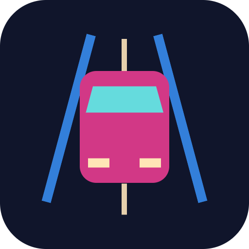

<- all projects

Neon '99
PC
Volume
Live
1999, a pager and a tired coupe: race the night circuits, keep June's garage alive.
It is 1999, and a pager, a tired coupe and your aunt June's garage are all you have. Earn your place in the fictional city of Glassport, juggle day jobs and late-night race invitations, and decide whether loyalty is worth more than the next trophy. Race 36 events on six neon circuits, forward and reverse, dry and wet, against four rivals with their own habits while managing boost, tire heat and wear. Pay rent every seventh day, upgrade eight fictional cars, and follow six story chapters with choices and three endings.